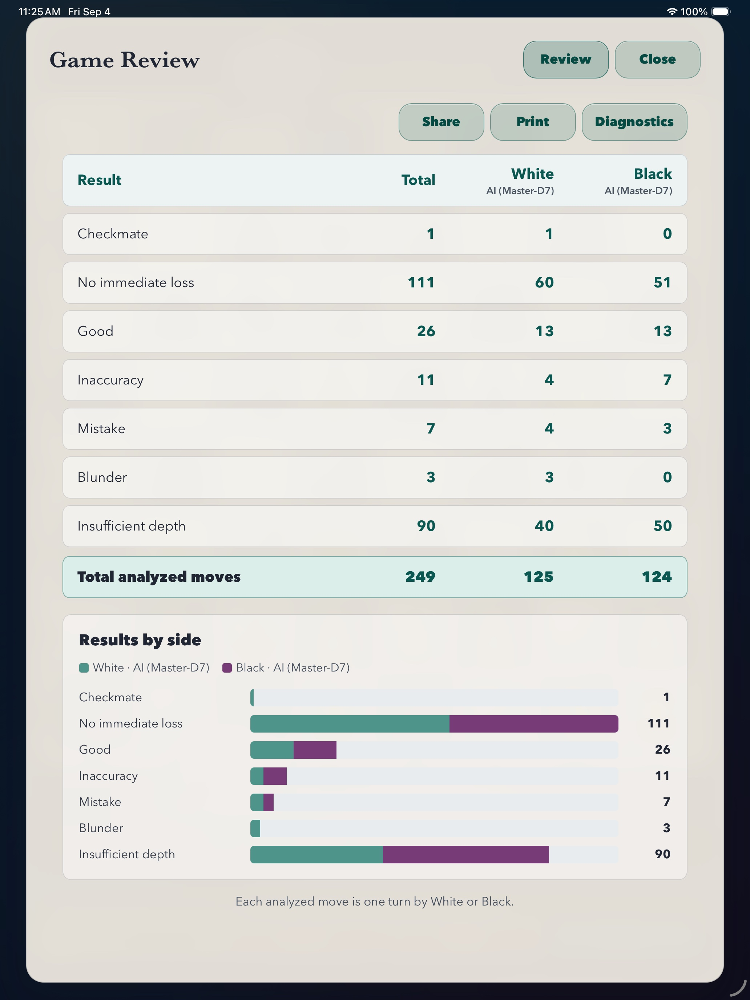
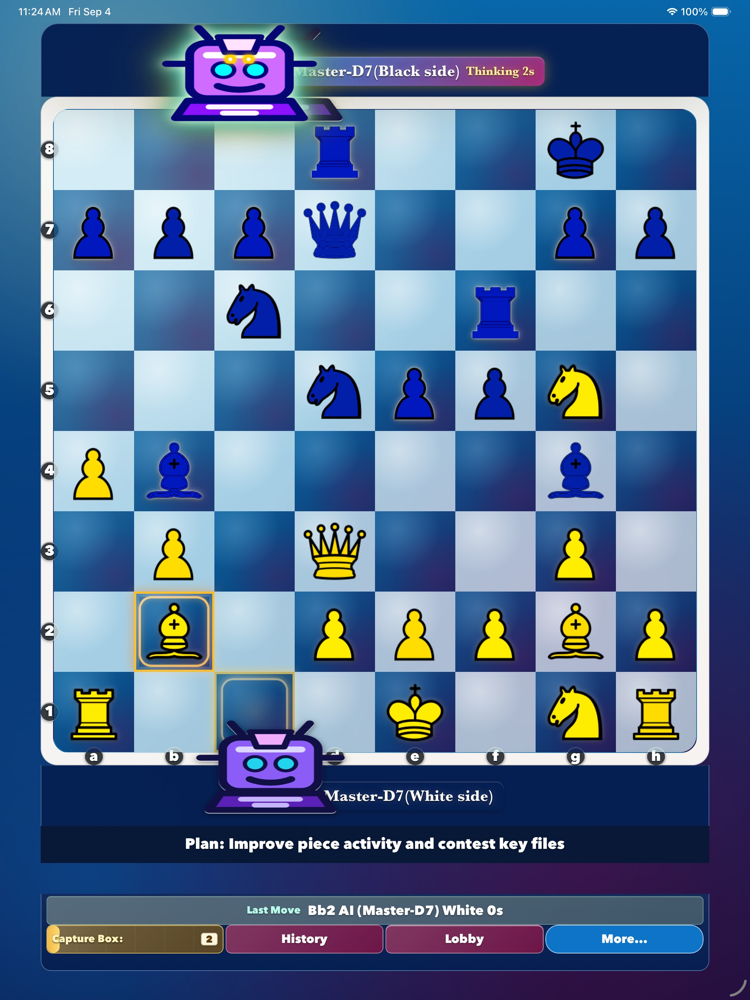
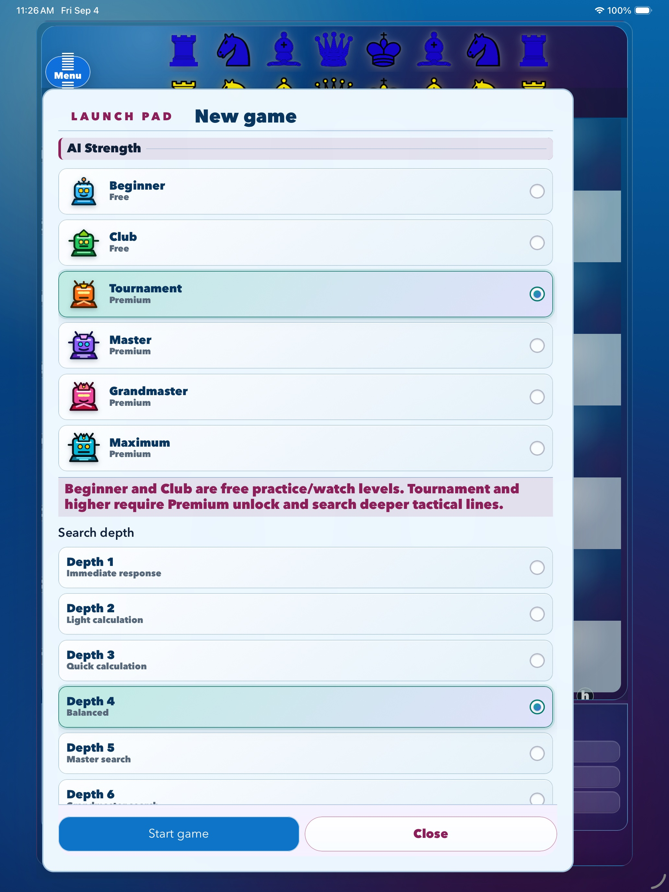

Contact Support
Email:
About This Release
Chess Grandmaster AI version 1.2.1 is an offline chess practice, review, and study app. Play against the built-in chess engine or watch engines play automatically. No account is required for normal gameplay.
What's New in Version 1.2.1
- Review completed games move by move and explore full-game analysis and summaries with Premium.
- Challenge Tournament, Master, Grandmaster, and Maximum AI levels with Premium.
- Use maximum analysis depth and choose from additional Premium board themes, piece styles, and player avatars.
- See clearer Premium status and unlock screens, with improved purchase, restore, and entitlement handling.
- Reliability and interface improvements.
The built-in engine is designed for offline practice and study. Its suggestions and review labels are not guaranteed perfect tournament play.
Version 1.2 previews
See offline play and Game Review in action
Explore these version 1.2 phone and tablet previews, including Premium AI strengths, active engine play, move-by-move review, and the results-by-side summary.
Active engine play on iPhone
This silent preview shows a local game in progress with the engine plan, last move, history, capture box, and board controls visible on one screen.
On iPhone


On iPad



Select any screenshot to open the full-size image.
Premium Unlock
Free features include playing against the built-in engine, watching engines play automatically, Beginner and Club AI levels, and a selection of board themes, piece styles, and player avatars. Premium Unlock is a one-time, non-consumable purchase, not a subscription. It adds move-by-move Game Review, full-game analysis and summaries, Tournament, Master, Grandmaster, and Maximum AI levels, maximum analysis depth, and additional appearance choices.
How do I purchase Premium Unlock?
- Open Launch Pad.
- Select Tournament, Master, Grandmaster, or Maximum.
- Choose Unlock Premium and complete the purchase through the App Store or Google Play.
How do I restore a previous purchase?
- Open the Premium Unlock screen.
- Select Restore or Restore Purchases.
- Use the same store account that originally purchased Premium Unlock and make sure the device is online.
Restoring is useful after reinstalling the app or moving to another supported device. Premium Unlock is associated with the store account and platform where it was purchased; Apple and Google purchases do not transfer between stores.
What if my purchase or restoration does not complete?
Confirm that the device is online, that you are signed in with the original store account, and that purchases are allowed on the device. Restart the app and try Restore Purchases again. If the problem continues, contact support and include the device type and a description of what happened. Do not send payment-card details or account passwords.
How to Start a Game
- Open Chess Grandmaster.
- Tap Menu.
- Open Launch Pad.
- Choose Play with Chess Engine or Watch and Learn from Chess Engines.
- Select AI Strength and available options.
- Tap Start game.
Frequently Asked Questions
Can I play offline?
Yes. Version 1.2.1 games and Premium Game Review run locally on this device. An internet connection is needed for store actions such as purchasing or restoring Premium Unlock, or when you choose to open an external support or update page.
How do I review a completed game?
At the game result, choose Review Game. Move-by-move Game Review analysis and the full-game analysis and summary require Premium Unlock. The first review analyzes the game locally and may take some time; a completed cached review opens faster later. Move History during play and basic result details are available without Premium.
What does Insufficient depth mean?
The bounded local search did not verify enough of that position to assign a confident move-quality label. It does not mean that the move was necessarily good or bad.
Can I cancel Game Review?
Yes. Choose Cancel while analysis is running. Your completed game and its played moves are not changed.
What is in a Review Diagnostic export?
It contains the reviewed game's moves, positions, engine settings, search results, and timing details. It is created locally and leaves the device only when you choose Copy or Export File.
Why can Game Review or stronger AI take longer?
Complex positions and higher depth settings require more local calculation. Analysis time varies by game length, position, depth, and device performance.
Do I need an account?
No. Accounts are not required for this release.
Does this release include live online play?
No. Version 1.2.1 does not enable live play, chat, player queues, accounts, or player-to-player challenges.
Where do I change board themes or pieces?
Open Menu, then Settings. Theme, piece style, avatars, music, sounds, and timers can be adjusted there. A selection of themes, piece styles, and avatars is free; additional choices require Premium Unlock.
Will updating change my saved appearance?
Your currently saved theme, piece style, or avatar remains usable after updating, even if that choice is now Premium. Choosing a different Premium appearance requires Premium Unlock.
Does the app show ads?
No. Version 1.2.1 does not include advertising.
App Information
- App Name: Chess Grandmaster AI
- Version: 1.2.1
- Provider: Dhana Angdembey